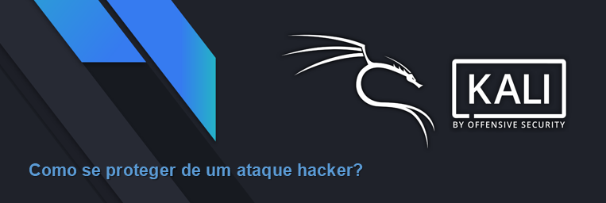

Redefinir senhas frequentemente, bloquear dispositivos, e manter o software atualizado são medidas de segurança bastante comuns. Porém, a segurança de uma aplicação pode, muitas vezes, ser um elemento ignorado e vulnerável.
As aplicações web têm grandes chances de sofrer ameaças desencadeadas por vários fatores, como falhas de sistema devido à codificação incorreta, servidores web mal configurados e problemas no design da aplicação.